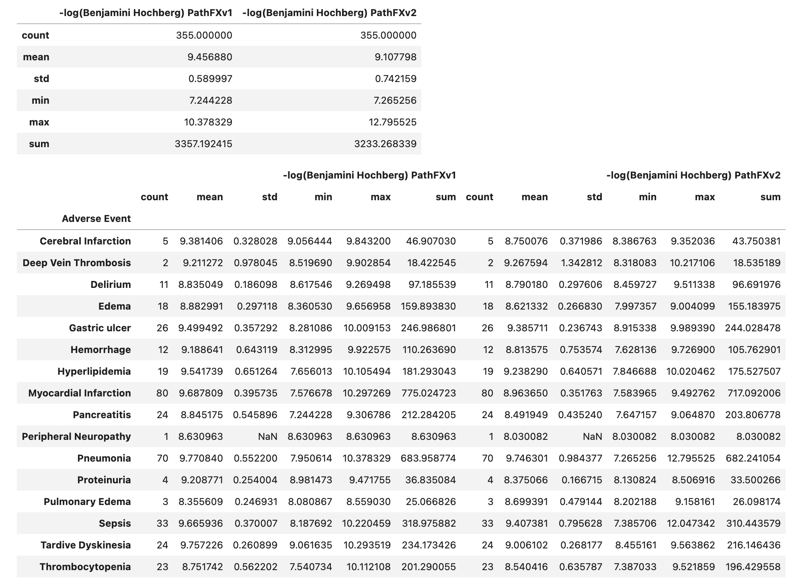
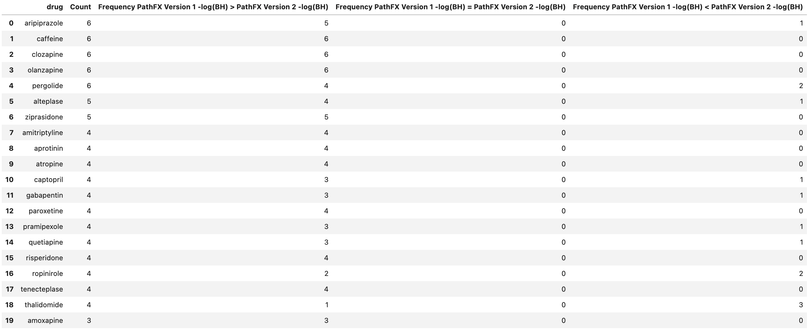
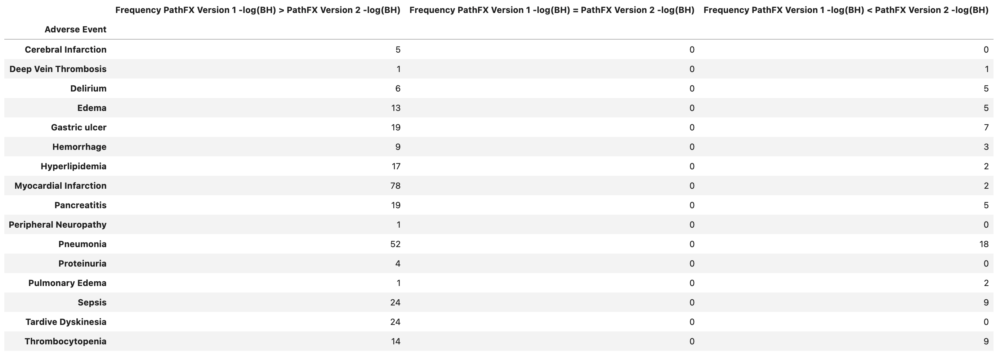
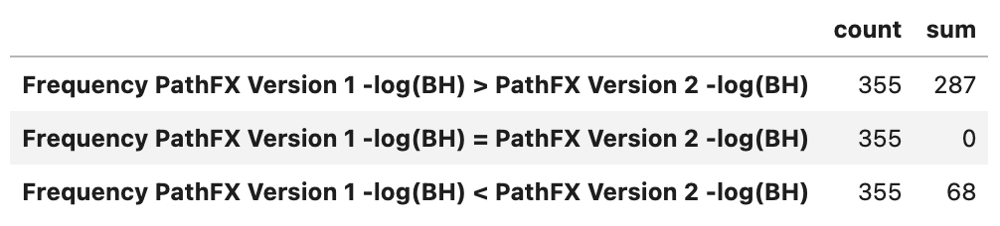

General Benchmark Results
General Summary info
Below is a general summary of the differences between PathFX Version 1.0 vs. PathFX Version 2.0.
Drug Targets All Same? - No
Number of Drug Target lists where contents are all the same: 27
Number of Drug Associations in Version 1: 355
Number of Drug Associations in Version 2: 355
Number of Drug Associations in Version Both Versions: 0
Number of Unique Drugs: 195
Number of Unique (CUI, Drug) pairs: 355
Number of Unique CUIs: 16
Number of Unique phenotype_v1: 16
Number of Unique phenotype_v2: 16
Table Info on Comparing the Distribution of the Difference in -log(Benjamini Hochberg) between PathFX Version 2 and Version 1 
Table Info on Comparing the Distribution of the Difference in -log(Benjamini Hochberg) between PathFX Version 2 and Version 1



Table Comparing -log(Benjamini Hochberg) Greater Value in PathFX Version 2 vs. Version 1 
Graphs
-log(Benjamini Hochberg Version 1) vs -log(Benjamini Hochberg Version 2)
Distribution of Neighborhood Gene List Size between PathFX Versions
Difference in -log(Benjamini Hochberg) between PathFX Version 2 and Version 1 per CUI
Mean Difference in -log(Benjamini Hochberg) between Version 2 and Version 1 of PathFX for each Drug
Mean Difference in -log(Benjamini Hochberg) between Version 2 and Version 1 of PathFX for Phenotype